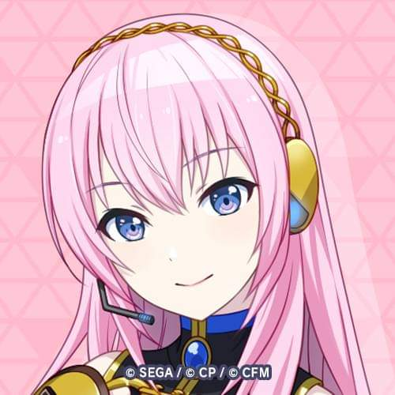

Luka Megurine - CV03
Megurine Luka (巡音ルカ) adalah salah satu karakter VOCALOID yang dikembangkan oleh Crypton Future Media dan dirilis pada 30 Januari 2009. Ia merupakan VOCALOID generasi ketiga setelah Hatsune Miku dan Kagamine Rin/Len, dan menjadi yang pertama dari Crypton yang mendukung dua bahasa, yaitu Jepang dan Inggris. Suara Luka diisi oleh pengisi suara profesional Jepang, Yuu Asakawa, yang memberikan karakter vokal yang lembut, matang, dan penuh emosi, sangat cocok untuk genre musik seperti pop, jazz, ballad, hingga electronic. Nama “Megurine” berasal dari kata Jepang “meguru” (berputar/mengelilingi) dan “ne” (suara), sementara “Luka” juga bisa diartikan sebagai “lagu yang mengalir”, mencerminkan konsep suara yang menyatukan budaya dan bahasa.
Secara visual, Luka digambarkan sebagai perempuan muda berpenampilan elegan dengan rambut panjang berwarna merah muda dan pakaian bergaya futuristik bernuansa klasik Jepang. Karakter Luka sering digambarkan memiliki kepribadian yang dewasa, tenang, dan sedikit misterius. Ia dikenal lewat lagu-lagu populernya seperti “Just Be Friends”, “Luka Luka★Night Fever”, dan “Double Lariat”, serta sering tampil dalam duet atau kolaborasi dengan VOCALOID lain seperti Hatsune Miku, Kagamine Rin, dan Len.
